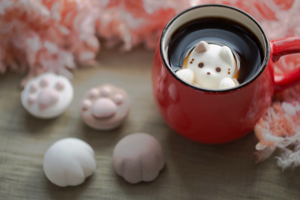

Marshmallow Milk Tea
Yes, it is as yummy as it sounds!
What you need:
- one tea-bag of extra strong black tea
- (or use 2 tea-bags for normal strength tea)
- brown sugar
- full-cream milk
- Marshmallows!!
How to make:
- 1. put tea-bag (and sugar optional) in a cup
- 2. pour boiling water into cup up to 2/3 of cup
- 3. stir and let tea brew for 2-3 mins
- 4. pour in some milk to fill up the cup
- 5. remove tea-bag and throw in some marshmallows!
- **marshmallows can replace sugar as sweetener**